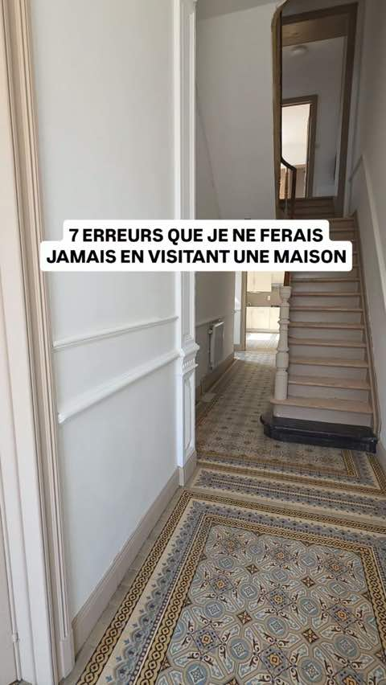
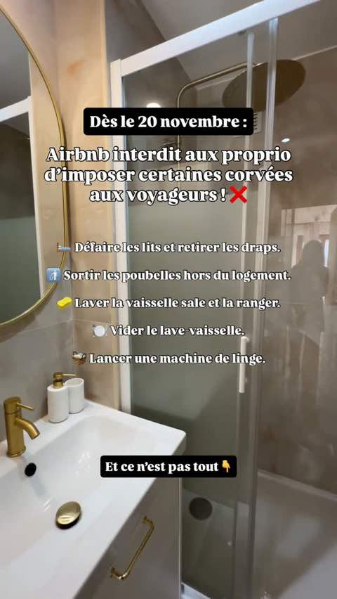

Touche une vidéo pour la regarder.
Les 3 idées qui ont le plus de chances de prendre en ce moment. Un téléphone et un agent motivé suffisent.
Les formats qui reviennent dans les vidéos immo qui font le plus de vues, chiffres à l'appui.
Triées par vues. « X fois plus que d'habitude » : la vidéo a fait X fois plus de vues que les vidéos normales du compte, donc c'est l'idée qui a marché, pas la célébrité du compte. Engagement = j'aime + commentaires, divisés par les vues.

1,7 M vues
en 40 heures
- 53 fois plus que d'habitude
- Engagement 4,7 % (80 k j'aime · 707 commentaires)
- Publiée mardi 17/11 à 17h02
- Durée 36 s
- @lagenceimmo.fr · Instagram · 4 k abonnés
Un employé négocie avec son patron le nombre de likes nécessaires pour fermer l'agence le jour de la sortie de GTA 6.
- Le début (3 premières secondes)
- à l'écran : « On demande à notre patron combien de me like il faut pour fermer l'agence à la sortie de GTA 6 » / dit : « Mathieu ? Oui. J'avais une petite question »
- Comment c'est construit
- Interpellation du patron à son bureau > Négociation du défi lié à GTA 6 > Le patron fixe l'objectif à 25 000 likes > Poignée de main pour valider le pari
- Pourquoi ça marche
- La vidéo surfe sur une tendance pop-culture extrêmement populaire auprès des jeunes tout en incitant directement à liker. Le ton spontané et l'ambiance décontractée au bureau créent une forte sympathie.
À ta sauce : Demander à son patron combien de likes il faut pour offrir le champagne ou un cadeau de bienvenue au prochain acheteur. Il suffit de filmer l'échange au smartphone pour stimuler l'engagement des abonnés.
Script prêt à tourner plus bas : « Le pari des croissants »
Voir la vidéo sur Instagram870 k vues
en 3 semaines
- 77 fois plus que d'habitude
- Engagement 0,0 % (185 j'aime · 11 commentaires)
- Publiée jeudi 29/10 à 16h55
- Durée 54 s
- @safti_france · Instagram · 26 k abonnés
Teaser dynamique et immersif de la convention annuelle du réseau immobilier SAFTI
- Le début (3 premières secondes)
- à l'écran : « The Orange Era - Convention SAFTI 2026 Strasbourg »
- Comment c'est construit
- Arrivée et découverte du lieu > Moments forts sur scène et plénière > Soirée festive et ambiance entre conseillers > Logo final
- Pourquoi ça marche
- Le dynamisme du montage et l'énergie collective créent un fort sentiment d'appartenance. La dimension spectaculaire et festive génère l'envie de rejoindre le réseau.
À ta sauce : Filme les coulisses et l'ambiance d'une vente réussie ou d'une signature chez le notaire avec toute ton équipe. Montre l'énergie humaine et la convivialité de ton agence locale pour attirer de futurs clients.
Script prêt à tourner plus bas : « Coulisses d'une vente VIP »
Voir la vidéo sur Instagram
681 k vues
en 14 jours
+23 k vues en 25 h
- 2,9 fois plus que d'habitude
- Engagement 0,7 % (4 k j'aime · 72 commentaires)
- Publiée jeudi 05/11 à 10h05
- Durée 55 s
- @seloger · TikTok
analyse partielle : une explication claire et face caméra des règles juridiques entourant l'hébergement gratuit d'un proche chez soi quand on est locataire.
- Le début (3 premières secondes)
- à l'écran : « HÉBERGER UN PROCHE CHEZ SOI QUAND ON EST LOCATAIRE : LA RÈGLE À CONNAÎTRE » / dit : « Est-ce que votre propriétaire a le droit de vous interdire d'héberger un proche chez vous ? »
- Comment c'est construit
- Accroche sur les droits du locataire > Distinction entre hébergement gratuit et sous-location > Explication de la loi > Conseils pratiques > Appel à l'action
- Pourquoi ça marche
- La vidéo répond à une idée reçue très répandue et lève un doute légal fréquent chez de nombreux locataires. Son format pédagogique et direct suscite immédiatement la curiosité et les partages.
À ta sauce : Pierre peut se filmer face caméra pour expliquer si un propriétaire a le droit d'interdire les animaux de compagnie dans une location. Il résume la règle de loi en 30 secondes et invite les abonnés à poser leurs questions en commentaire.
Script prêt à tourner plus bas : « Peindre ses murs quand on est locataire »
Voir la vidéo sur TikTok
651 k vues
en 3 jours
- 20 fois plus que d'habitude
- Engagement 2,8 % (18 k j'aime · 578 commentaires)
- Publiée lundi 16/11 à 17h49
- Durée 13 s
- @lagenceimmo.fr · Instagram · 4 k abonnés
Un employé se fait convoquer par son patron, mais il choisit de fermer la porte en restant du côté du couloir pour éviter la discussion.
- Le début (3 premières secondes)
- dit : « Maxime ? Ouais ? Faut qu'on parle dans mon bureau. »
- Comment c'est construit
- Le patron convoque Maxime > Maxime le suit jusqu'au bureau > Le patron lui demande de fermer la porte > Maxime ferme la porte en restant à l'extérieur et s'en va
- Pourquoi ça marche
- La vidéo joue sur un ressort d'humour absurde et d'identification autour du stress d'être convoqué par son supérieur. Le comique vient du décalage visuel inattendu quand Maxime ferme la porte en restant dehors.
À ta sauce : Filmer un sketch où l'agent dit au client d'un ton chaleureux de faire comme chez lui, puis le retrouve en pyjama dans le canapé à regarder la télé. Cela se tourne facilement à deux personnes avec un téléphone en alternant deux plans simples.
Script prêt à tourner plus bas : « Le compromis à relire »
Voir la vidéo sur Instagram462 k vues
en 2 mois
- 87 fois plus que d'habitude
- Engagement 0,1 % (290 j'aime · 46 commentaires)
- Publiée samedi 05/09 à 13h03
- Durée 5 s
- @geoffrey.delvaux · Instagram · 6 k abonnés
Une démonstration humoristique d'un détail gênant du quotidien qu'on oublie souvent de vérifier avant d'acheter un bien immobilier.
- Le début (3 premières secondes)
- à l'écran : « LES DÉTAILS QUE TU REGRETTES APRÈS AVOIR SIGNÉ CHEZ LE NOTAIRE... (Et que personne ne pense à vérifier) »
- Comment c'est construit
- Ouverture de la porte d'entrée > Découverte du blocage de la porte à cause de l'espace réduit > Tentative de se faufiler difficilement dans l'entrée
- Pourquoi ça marche
- La scène suscite une identification immédiate et de l'amusement face à une situation absurde du quotidien. La brièveté de la vidéo incite fortement le spectateur à lire la légende pour avoir la liste complète des conseils.
À ta sauce : Se filmer en train de chercher désespérément du réseau mobile dans chaque coin d'une pièce avec son téléphone en l'air. Compléter la vidéo avec une légende listant les vérifications invisibles à faire avant d'acheter.
Script prêt à tourner plus bas : « Le réseau introuvable »
Voir la vidéo sur Instagram
432 k vues
en 9 jours
- 9,4 fois plus que d'habitude
- Engagement 0,2 % (863 j'aime · 54 commentaires)
- Publiée mardi 10/11 à 11h57
- Durée 11 s
- @pap.fr · Instagram · 106 k abonnés
Un tableau synthétique affichant le prix au m² et l'évolution annuelle dans les différentes villes du Calvados.
- Le début (3 premières secondes)
- à l'écran : « Prix immobiliers Calvados »
- Comment c'est construit
- Affichage du tableau comparatif des prix du Calvados > Défilement de paysages locaux en arrière-plan > Maintien du tableau jusqu'à la fin de la vidéo
- Pourquoi ça marche
- Les chiffres locaux captent immédiatement l'attention des habitants curieux de connaître la valeur de leur marché. Le format épuré incite à la sauvegarde et à la lecture de la légende.
À ta sauce : Filmer une belle rue de son secteur en plan fixe et superposer un tableau des prix au m² de son secteur. Ajouter une voix off courte expliquant quelle ville voisine a le plus augmenté.
Script prêt à tourner plus bas : « Combien de m² pour 200 000 € dans le 44 ? »
Voir la vidéo sur Instagram
351 k vues
en 8 semaines
- Engagement 0,0 % (32 j'aime · 2 commentaires)
- Publiée mardi 22/09 à 11h31
- Durée 10 s
- @seloger · Instagram · 147 k abonnés
Suivre pas à pas les différentes étapes de la journée où l'on devient enfin propriétaire.
- Le début (3 premières secondes)
- à l'écran : « MA JOURNÉE D'ACHAT IMMOBILIER »
- Comment c'est construit
- Arrivée et dernière visite de vérification > Relevé du compteur électrique > Signature chez le notaire > Célébration lors de la remise des clés
- Pourquoi ça marche
- Ce format mini vlog suscite une forte projection et l'identification des personnes qui rêvent d'acheter. La progression heure par heure crée un sentiment d'aboutissement très satisfaisant lors de la remise des clés.
À ta sauce : Pierre peut filmer sa propre journée sous le titre Ma journée d'accompagnement de signature avec les étapes clés jusqu au notaire. Cela met en valeur l'aide concrète et bienveillante apportée par l'agent immobilier du début à la fin.
Voir la vidéo sur Instagram
332 k vues
en 3 mois
- 62 fois plus que d'habitude
- Engagement 0,5 % (1 k j'aime · 376 commentaires)
- Publiée jeudi 03/09 à 21h53
- Durée 6 s
- @geoffrey.delvaux · Instagram · 6 k abonnés
Une belle visite visuelle courte avec un titre intrigant qui renvoie vers les conseils complets dans la légende.
- Le début (3 premières secondes)
- à l'écran : « 7 ERREURS QUE JE NE FERAIS JAMAIS EN VISITANT UNE MAISON »
- Comment c'est construit
- Entrée dans la pièce avec le titre principal > Avancée vers le fond avec le sous-titre > Fin sur la vue d'ensemble du séjour
- Pourquoi ça marche
- Elle joue sur la peur de commettre une erreur coûteuse lors d'un achat immobilier. La brièveté de la vidéo force le spectateur à la rejouer plusieurs fois pendant qu'il lit la légende, ce qui fait exploser l'algorithme.
À ta sauce : Pierre avance dans une belle cuisine et affiche le texte 3 pièges à éviter absolument avant d'acheter. Il renvoie directement vers la légende où il détaille les points de contrôle techniques indispensables.
Script prêt à tourner plus bas : « Les 5 erreurs en visite »
Voir la vidéo sur Instagram
326 k vues
en 13 jours
- 7,1 fois plus que d'habitude
- Engagement 0,0 % (111 j'aime · 20 commentaires)
- Publiée vendredi 06/11 à 16h46
- Durée 46 s
- @pap.fr · Instagram · 106 k abonnés
Explication des trois cas légaux permettant à un locataire de refuser une augmentation de loyer.
- Le début (3 premières secondes)
- à l'écran : « Mon PROPRIO augmente mon LOYER de 100 euros 😟 » / dit : « Ton propriétaire veut augmenter ton loyer ? Et bien voici les 3 cas où tu peux refuser tout simplement ! »
- Comment c'est construit
- Accroche sur la hausse du loyer > Cas 1 sans clause d'indexation > Cas 2 passoire thermique F ou G > Cas 3 augmentation plafonnée par l'IRL > Appel au partage et commentaires
- Pourquoi ça marche
- Elle répond directement à une crainte financière forte des locataires en proposant des solutions concrètes et juridiques. Le ton dynamique et le chiffre précis donnent immédiatement envie de partager l'astuce.
À ta sauce : Tourne une vidéo face caméra expliquant 3 astuces très simples pour récupérer 100% de son dépôt de garantie lors de l'état des lieux. Donne des exemples concrets de petites réparations à faire soi-même avant de rendre les clés.
Voir la vidéo sur Instagram
316 k vues
en 17 jours
+100 vues en 25 h
- Engagement 0,2 % (546 j'aime · 6 commentaires)
- Publiée lundi 02/11 à 14h48
- Durée 7 s
- @seloger · TikTok
Une comédienne liste 5 critères immobiliers qui justifient leur prix tout en feignant de chercher sur son ordinateur.
- Le début (3 premières secondes)
- à l'écran : « 5 CHOSES QUI VALENT LEUR PRIX : »
- Comment c'est construit
- Affichage de la liste des 5 critères à l'écran > La comédienne réfléchit et tape sur son ordinateur > Fin du plan fixe en rythme sur la musique
- Pourquoi ça marche
- Le sujet suscite immédiatement l'identification des personnes en recherche immobilière. La faible durée de la vidéo permet un taux de visionnage complet très élevé.
À ta sauce : Pierre peut se filmer à son bureau en train de taper sur son ordinateur avec un texte superposé listant les 5 critères indispensables pour acheter dans son quartier. C'est un format express à tourner seul avec son smartphone.
Voir la vidéo sur TikTok
277 k vues
en 4 semaines
+235 vues en 25 h
- 9,2 fois plus que d'habitude
- Engagement 0,4 % (513 j'aime · 553 commentaires)
- Publiée vendredi 23/10 à 12h05
- Durée 6 s
- @emelinesiron · Instagram · 87 k abonnés
Une annonce informative sur la nouvelle réglementation Airbnb interdisant d'imposer des corvées aux voyageurs, présentée par du texte affiché sur une vidéo de visite de salle de bain.
- Le début (3 premières secondes)
- à l'écran : « Dès le 20 novembre : Airbnb interdit aux proprio d'imposer certaines corvées aux voyageurs ! ❌ »
- Comment c'est construit
- Accroche sur la nouvelle règle Airbnb > Énumération des tâches désormais interdites > Teasing final incitant à lire la légende
- Pourquoi ça marche
- Cette information juridique choc suscite une forte réaction immédiate chez les hôtes et les voyageurs Airbnb. La brièveté du texte force l'utilisateur à enregistrer le post et lire la légende complète.
À ta sauce : Filmer un joli coin d'appartement avec un texte présentant 3 clauses abusives fréquemment vues dans les baux de location. Rediriger vers la légende pour expliquer les recours légaux des locataires.
Script prêt à tourner plus bas : « Ce qui change au 1er janvier »
Voir la vidéo sur Instagram
271 k vues
en 3 semaines
- 14 fois plus que d'habitude
- Engagement 1,1 % (3 k j'aime · 42 commentaires)
- Publiée mercredi 28/10 à 18h00
- Durée 28 s
- @sandra.viricel.immobilier · Instagram · 15 k abonnés
Visite immersive et élégante d'un appartement d'exception situé face au Parc de la Tête d'Or à Lyon.
- Le début (3 premières secondes)
- à l'écran : « LYON 6 Appartement - 137m2 - 4 pièces »
- Comment c'est construit
- Façade extérieure et environnement > Entrée de l'immeuble > Découverte du salon et du charme ancien > Vue sur les arbres depuis le balcon et logo
- Pourquoi ça marche
- L'emplacement très prisé face au parc déclenche immédiatement un désir d'appartenance. Les beaux volumes et le cachet de l'ancien captivent les acheteurs à la recherche de biens de standing.
À ta sauce : Commencer une visite vidéo directement par un plan traversant depuis le balcon vers l'extérieur pour saisir la meilleure vue du bien dès la première seconde. Poursuivre avec une traversée fluide des pièces de vie en montrant un détail architectural marquant.
Script prêt à tourner plus bas : « La vue d'abord »
Voir la vidéo sur Instagram271 k vues
en 18 jours
- 5,9 fois plus que d'habitude
- Engagement 0,0 % (83 j'aime · 17 commentaires)
- Publiée dimanche 01/11 à 18h05
- Durée 12 s
- @pap.fr · Instagram · 106 k abonnés
Un tableau récapitulatif des prix au mètre carré et de leurs variations annuelles dans 15 villes de Guadeloupe.
- Le début (3 premières secondes)
- à l'écran : « Prix immobiliers Guadeloupe »
- Comment c'est construit
- Titre affiché 'Prix immobiliers Guadeloupe' > Liste comparative des 15 villes > Fin de la vidéo en boucle sur le tableau
- Pourquoi ça marche
- Les données chiffrées locales suscitent la curiosité et l'intérêt des résidents. Le format synthétique pousse à enregistrer ou partager la vidéo pour garder les chiffres en mémoire.
À ta sauce : Pierre peut afficher un tableau des prix par quartier de sa ville à l'écran et commenter brièvement la plus forte hausse en voix off. Cela se réalise très rapidement avec un téléphone et une application de montage gratuite.
Voir la vidéo sur Instagram256 k vues
en 3 mois
- 5,4 fois plus que d'habitude
- Engagement 0,0 % (0 commentaires)
- Publiée jeudi 27/08 à 16h01
- Durée 51 s
- @bienici · Instagram · 36 k abonnés
Micro-trottoir questionnant les passants sur leur exposition idéale au soleil pour promouvoir une fonctionnalité de l'application.
- Le début (3 premières secondes)
- à l'écran : « Moi j'aime bien dormir le matin ! » / dit : « Moi j'aime bien dormir le matin ! »
- Comment c'est construit
- Sondage des passants sur l'exposition matin ou après-midi > Enchaînement des avis contrastés > Présentation de la recherche par temps de trajet sur l'application > Réactions enthousiastes et écran de fin avec logo
- Pourquoi ça marche
- Le sujet crée un débat du quotidien très accessible qui incite les spectateurs à donner leur propre avis en commentaire. La promotion du service s'intègre ensuite naturellement grâce aux réactions authentiques des passants.
À ta sauce : Demander aux habitants de votre ville dans la rue s'ils préfèrent un grand balcon ou un grand salon. Conclure la vidéo en présentant un appartement à vendre dans l'agence qui propose justement les deux.
Script prêt à tourner plus bas : « Balcon ou pièce en plus ? »
Voir la vidéo sur Instagram
242 k vues
en 17 jours
- 5,1 fois plus que d'habitude
- Engagement 0,0 % (4 commentaires)
- Publiée lundi 02/11 à 16h01
- Durée 49 s
- @bienici · Instagram · 36 k abonnés
Un guide pratique des droits et interdictions de travaux quand on est locataire pour ne pas perdre sa caution.
- Le début (3 premières secondes)
- à l'écran : « Vous voulez enfin vous sentir chez vous ? » / dit : « Vous voulez enfin vous sentir chez vous ? Attention, aménager oui, mais transformer exige de respecter certaines règles. »
- Comment c'est construit
- Accroche sur les règles d'aménagement en location > Présentation de 3 modifications autorisées > Avertissement sur les gros travaux soumis à autorisation > Appel à l'action vers la plateforme
- Pourquoi ça marche
- Elle répond directement à la peur très répandue de perdre sa caution lors d'un déménagement. Le format en liste donne des conseils juridiques clairs, rassurants et faciles à retenir.
À ta sauce : Se filmer dans un appartement de l'agence en montrant 3 astuces pour personnaliser son intérieur sans faire de trous ni abîmer les murs. L'agent présente des solutions concrètes comme les crochets adhésifs ou les cadres posés sur des meubles.
Voir la vidéo sur Instagram
235 k vues
en 2 mois
- 6,6 fois plus que d'habitude
- Engagement 1,2 % (3 k j'aime · 77 commentaires)
- Publiée vendredi 18/09 à 16h37
- Durée 115 s
- @sandra_viricel · Instagram · 116 k abonnés
Une experte de l'immobilier alerte le public sur une arnaque émergente aux faux prêts bancaires ciblant les acheteurs.
- Le début (3 premières secondes)
- dit : « Les amis aujourd'hui je prends la parole et c'est assez rare que je le fasse »
- Comment c'est construit
- Mise en garde et constat de l'arnaque > Explication du mode opératoire des escrocs > Conseils de précaution à vérifier > Appel à la prudence et au partage
- Pourquoi ça marche
- La vidéo joue sur la peur de perdre son apport financier dans un projet de vie, ce qui incite fortement au partage. La notoriété et le ton sérieux de l'intervenante apportent une crédibilité immédiate.
À ta sauce : Tourne une vidéo face caméra pour mettre en garde les acheteurs locaux contre les fausses annonces de location ou de vente. Donne deux réflexes simples pour vérifier l'identité de l'agent avant tout versement.
Script prêt à tourner plus bas : « L'arnaque au virement avant visite »
Voir la vidéo sur Instagram232 k vues
en 7 jours
+4 k vues en 25 h
- 7,7 fois plus que d'habitude
- Engagement 0,6 % (1 k j'aime · 21 commentaires)
- Publiée jeudi 12/11 à 18h30
- Durée 9 s
- @emelinesiron · Instagram · 87 k abonnés
Une liste récapitulative de 10 sites internet publics gratuits et méconnus pour faire des économies ou récupérer de l'argent.
- Le début (3 premières secondes)
- à l'écran : « L'État a créé 10 sites gratuits qui peuvent te faire gagner des milliers d'euros »
- Comment c'est construit
- Titre d'accroche avec promesse de gain financier > Affichage d'une liste synthétique de 10 services publics > Plan fixe incitant à la lecture et à la sauvegarde
- Pourquoi ça marche
- La promesse de gagner de l'argent gratuitement suscite une forte curiosité immédiate. Le format sous forme de liste dense incite massivement à enregistrer le Reels pour le consulter plus tard.
À ta sauce : Pierre peut se filmer de profil face à une liste affichant 5 outils en ligne indispensables avant d'acheter un bien immobilier localement (DVF, Géorisques, Cadastre, etc.). Il invite ensuite les abonnés à enregistrer la vidéo et à lire la légende pour comprendre comment utiliser chaque outil.
Voir la vidéo sur Instagram224 k vues
en 3 semaines
- 4,7 fois plus que d'habitude
- Engagement 0,0 % (2 commentaires)
- Publiée mercredi 28/10 à 17h16
- Durée 56 s
- @bienici · Instagram · 36 k abonnés
Une présentatrice donne 3 conseils pratiques dans la rue pour aider les candidats locataires à décrocher une visite d'appartement.
- Le début (3 premières secondes)
- à l'écran : « MARRE » / dit : « Si tu en as marre d'envoyer des messages pour un appartement et de ne pas avoir de réponse, cette vidéo est faite pour toi. »
- Comment c'est construit
- Accroche sur la frustration des recherches d'appartement > Conseil 1 : envoyer un dossier complet > Conseil 2 : être ultra réactif > Conseil 3 : instaurer un échange de confiance > Appel à l'action pour télécharger l'application
- Pourquoi ça marche
- Elle s'adresse directement à une frustration très répandue chez les chercheurs de logement pour capter immédiatement l'attention. Les conseils sont simples, concrets et valorisent le rôle de l'agent immobilier.
À ta sauce : L'agent se filme micro à la main dans le centre-ville de sa commune pour donner les 3 erreurs qui font éliminer un dossier de location localement. C'est simple à tourner en marchant avec un smartphone et un micro cravate.
Voir la vidéo sur Instagram210 k vues
en 22 heures
- 6,5 fois plus que d'habitude
- Engagement 4,2 % (9 k j'aime · 94 commentaires)
- Publiée mercredi 18/11 à 10h49
- Durée 35 s
- @lagenceimmo.fr · Instagram · 5 k abonnés
Le patron d'une agence honore un pari fait avec sa communauté et accorde une journée de congé à son équipe.
- Le début (3 premières secondes)
- à l'écran : « Donc l'agence fermera bien ce jeudi pour que je puisse jouer à GTA 6 Merci Matteo » / dit : « Bah alors Matteo, plus de 47 000 likes sur la dernière vidéo, je pense que je vais pouvoir jouer à GTA 6 »
- Comment c'est construit
- Annonce du respect du défi de likes > Coulisses de la décision du patron > Nouveau sous-défi imposé à l'employé > Accord final et souhait de bon congé
- Pourquoi ça marche
- Elle crée un fort sentiment de communauté en montrant que l'agence tient ses promesses faites aux abonnés. La complicité patron-employé et la référence à la culture pop apportent une touche très humaine.
À ta sauce : Pierre peut lancer un pari simple avec son audience comme faire visiter un bien en tenue originale s'il atteint mille likes. Il tournera ensuite la suite seul face caméra pour remercier sa communauté tout en créant du divertissement.
Script prêt à tourner plus bas : « Le pari du patron tenu »
Voir la vidéo sur Instagram164 k vues
en 6 jours
+710 vues en 25 h
- 5,5 fois plus que d'habitude
- Engagement 0,2 % (228 j'aime · 18 commentaires)
- Publiée vendredi 13/11 à 18h30
- Durée 7 s
- @emelinesiron · Instagram · 87 k abonnés
Un tableau synthétique qui montre la capacité d'emprunt bancaire selon son salaire mensuel.
- Le début (3 premières secondes)
- à l'écran : « Avec ton seul salaire, la banque te prête combien ? »
- Comment c'est construit
- Question d'accroche en haut > Tableau comparatif montrant salaire net et capacité d'emprunt > Émoticône pointant sur une tranche de salaire spécifique
- Pourquoi ça marche
- La curiosité immédiate pousse le spectateur à chercher son propre salaire dans la liste pour connaître son pouvoir d'achat. Le format très lisible incite à sauvegarder la vidéo et à lire la légende.
À ta sauce : Pierre peut réaliser une image similaire adaptée à sa ville en montrant quelle surface de logement on peut acheter selon son salaire net mensuel. Il lui suffit de filmer une belle rue de son quartier en arrière-plan et d'ajouter le texte par-dessus.
Voir la vidéo sur Instagram
162 k vues
en 3 mois
- 30 fois plus que d'habitude
- Engagement 0,0 % (1 commentaires)
- Publiée jeudi 03/09 à 21h41
- Durée 6 s
- @geoffrey.delvaux · Instagram · 6 k abonnés
Un agent liste les objets du quotidien qui encombrement inutilement un logement et freinent les acheteurs.
- Le début (3 premières secondes)
- à l'écran : « 8 OBJETS QUI ENCOMBRENT UNE MAISON... ALORS QUE LES GENS PENSENT EN AVOIR "BESOIN" »
- Comment c'est construit
- Plan panoramique dans un salon décoré > Transition rapide vers l'agent > Posage de l'agent tout sourire invitant à lire la légende
- Pourquoi ça marche
- Le titre crée une forte curiosité en remettant en question des habitudes du quotidien. La brièveté de la vidéo force le spectateur à lire la description complète pour avoir la liste.
À ta sauce : Se filmer en marchant dans une pièce puis pointer 3 détails qui gâchent les photos immobilières. Renvoyer vers la légende pour détailler comment désencombrer efficacement avant une vente.
Voir la vidéo sur Instagram161 k vues
en 3 mois
- 30 fois plus que d'habitude
- Engagement 0,1 % (197 j'aime · 4 commentaires)
- Publiée dimanche 30/08 à 22h24
- Durée 5 s
- @geoffrey.delvaux · Instagram · 6 k abonnés
Présentation des petits détails invisibles lors d'une visite qu'on regrette d'avoir ignorés après l'achat.
- Le début (3 premières secondes)
- à l'écran : « LES DÉTAILS QU'ON REGRETTE APRÈS AVOIR SIGNÉ CHEZ LE NOTAIRE... »
- Comment c'est construit
- Entrée du présentateur dans une pièce avec le texte d'accroche > Vérification d'un placard mural > Sortie du cadre pour inciter à lire la légende
- Pourquoi ça marche
- L'accroche active la peur de commettre une erreur irréversible lors d'un achat immobilier. La vidéo très courte incitant à lire la description augmente le temps de visionnage global.
À ta sauce : Pierre peut se filmer en train de tester le débit d'un robinet ou une prise électrique pendant une visite. Il ajoute un texte percutant sur les pièges à éviter et liste ses 5 conseils dans la description.
Script prêt à tourner plus bas : « Le piège de la pression d'eau en visite »
Voir la vidéo sur Instagram116 k vues
en 12 jours
- 3,6 fois plus que d'habitude
- Engagement 1,2 % (1 k j'aime · 18 commentaires)
- Publiée samedi 07/11 à 18h38
- Durée 11 s
- @lagenceimmo.fr · Instagram · 4 k abonnés
Deux collègues d'une agence prennent conscience avec panique et humour que la caméra de sécurité a enregistré tous leurs potins.
- Le début (3 premières secondes)
- à l'écran : « Quand toi et ton collègue préféré venez d’apprendre que les caméras au boulot enregistrent aussi le son... »
- Comment c'est construit
- Attitude pensive des deux agents > Plan rapide sur la caméra murale > Prise de conscience embarrassée des agents > Fuite précipitée hors de la pièce
- Pourquoi ça marche
- Cette vidéo mise sur un ressort d'identification fort à une situation de bureau universelle et comique. Les expressions faciales très expressives incitent fortement les abonnés à identifier leurs propres collègues en commentaire.
À ta sauce : Pierre peut se filmer seul en train de réaliser qu'il a laissé son micro ouvert à la fin d'une visio avec un client après avoir dit une petite bêtise. Il mime la panique en coupant précipitamment son ordinateur avec une réaction très visuelle.
Voir la vidéo sur Instagram104 k vues
en 6 jours
- 5,5 fois plus que d'habitude
- Engagement 0,9 % (947 j'aime · 23 commentaires)
- Publiée vendredi 13/11 à 18h35
- Durée 56 s
- @sandra.viricel.immobilier · Instagram · 15 k abonnés
Présentation dynamique d'une maison contemporaine avec piscine et vue panoramique incarnée par l'agente immobilière.
- Le début (3 premières secondes)
- à l'écran : « LENTILLY Maison - 151m2 - 6 pièces » / dit : « Aujourd'hui on est à Lentilly pour vous montrer une maison contemporaine »
- Comment c'est construit
- Intro face caméra sur la terrasse > Découverte rythmée de la piscine et des extérieurs > Relance de l'agente qui insiste sur la vue > Aperçu des espaces de vie intérieurs lumineux > Final sur le panorama au coucher du soleil et logo agence
- Pourquoi ça marche
- L'incarnation humaine au début crée un lien de confiance immédiat. Le cadre idyllique avec la piscine et la vue panoramique suscite un fort désir d'évasion et de projection.
À ta sauce : Commence ta vidéo en face caméra sur le spot le plus spectaculaire du bien pour interpeller le spectateur. Enchaîne ensuite avec de courtes séquences immersives des meilleures pièces rythmées par une musique moderne.
Voir la vidéo sur Instagram
70 k vues
en 16 jours
- 2,2 fois plus que d'habitude
- Engagement 7,6 % (5 k j'aime · 9 commentaires)
- Publiée mardi 03/11 à 16h51
- Durée 42 s
- @lagenceimmo.fr · Instagram · 4 k abonnés
Un client décrit la maison de ses rêves qui prend forme en image jusqu'à ce qu'il annonce son budget modeste, réduisant le projet à une simple caravane.
- Le début (3 premières secondes)
- à l'écran : « On a un projet de construction » / dit : « On a un projet de construction »
- Comment c'est construit
- Exigences du client sur un terrain vide > Apparition progressive d'une villa de luxe avec piscine > Annonce de l'absence d'apport et du salaire > Transformation du projet en cabane puis en vieille caravane
- Pourquoi ça marche
- Le ressort repose sur l'humour et l'identification des agents immobiliers face aux attentes irréalistes de certains acheteurs. Le décalage visuel progressif entre le discours et la réalité du budget crée une chute très drôle.
À ta sauce : Filmer un agent qui décrit avec enthousiasme les équipements d'un bien d'exception face caméra. Terminer la vidéo en reculant le téléphone pour montrer qu'il se trouve dans un minuscule studio d'étudiant.
Voir la vidéo sur Instagram37 k vues
en 5 jours
- 9,9 fois plus que d'habitude
- Engagement 0,3 % (117 j'aime · 5 commentaires)
- Publiée samedi 14/11 à 18h16
- Durée 38 s
- @carolinarthaud · Instagram · 96 k abonnés
Un jeu de questions-réponses rapide style Fast and Curious sur les choix de financement entre payer cash ou à crédit.
- Le début (3 premières secondes)
- à l'écran : « Cash ou Crédit ? » / dit : « Smartphone ? »
- Comment c'est construit
- Questions rapides sur les objets du quotidien > Questions sur le luxe et les loisirs > Réflexion sur l'achat de la résidence principale > Conclusion stratégique sur l'achat-revente à crédit
- Pourquoi ça marche
- Le format dynamique et rythmé maintient l'attention jusqu'au bout. Il stimule la curiosité en révélant la stratégie financière personnelle d'un investisseur.
À ta sauce : Pierre peut poser 5 questions rapides à un courtier local sur les dossiers de prêt immobiliers face caméra. C'est très simple à tourner seul avec un smartphone et très utile pour les acheteurs.
Voir la vidéo sur InstagramÉcrits à partir des vidéos qui ont le mieux marché : même mécanique, autre sujet, pensés pour une agence. Ouvre, lis, tourne. Remplace les noms de lieux et les prix par ceux de ton agence.
Coulisses d'une vente VIP ~38 s
Moule repris de la vidéo de @safti_france (870 k vues). La revoir
Début (0-3 s). Image : Gros plan rapide sur des coupes de champagne puis panoramique vif sur un penthouse bondé à Lyon
Dit : « 18 heures à Lyon, 40 invités VIP et un penthouse vendu avant le dessert. »
Écran : Coulisses d'une soirée immo VIP
| 3-10 s | L'équipe d'agents qui règle le son du DJ et allume les guirlandes sur une terrasse de 120 m2
Dit : « Une fois par mois, l'agence privatise un bien d'exception pour une visite immersive. »
Écran : 120m2 privatises ce soir |
| 10-20 s | Montage ultra dynamique : tintement de verres, rires, clients qui admirent le coucher de soleil
Dit : « Fini les visites tristes. Ici, les acheteurs testent la vue, la lumière et l'ambiance du quartier. »
Écran : Vendre un bien autrement |
| 20-28 s | Un agent immobilier montre discrètement une offre d'achat signée sur une table basse
Dit : « Résultat : trois offres au prix déposées directement pendant le cocktail. »
Écran : 3 offres reçues en 2h |
| 28-35 s | Toute l'équipe de l'agence réunie qui trinque face caméra avec de grands sourires
Dit : « L'énergie du réseau fait toute la différence pour concrétiser vos projets. »
Écran : L'équipe Immo Lyon |
Chute : Apparition du logo animé de l'agence sur fond blanc avec le texte : L'immobilier ne se visite plus, il se vit.
Pour finir, tu dis : « Envoie cette vidéo à la personne avec qui tu veux fêter ton prochain déménagement ! »
Légende : Infiltration dans nos soirées ventes privées à Lyon. Abonne-toi pour ne pas rater le prochain bien d'exception !
Peindre ses murs quand on est locataire ~37 s
Moule repris de la vidéo de @seloger (679 k vues). La revoir
Début (0-3 s). Image : Pierre face caméra dans un salon, un pinceau à la main devant un mur bleu canard
Dit : « Votre propriétaire a-t-il le droit de vous interdire de peindre les murs de votre logement ? »
Écran : PEINDRE EN LOCATION : VOS DROITS
| 3-10 s | Pierre montre des nuanciers de peinture face caméra
Dit : « Beaucoup de locataires pensent qu'il faut obligatoirement tout repeindre en blanc avant de rendre les clés. »
Écran : Le blanc est-il obligatoire ? |
| 10-20 s | Pierre montre le texte de loi sur l'écran de son téléphone
Dit : « C'est faux. L'article 6 de la loi de 1989 vous autorise à décorer votre logement. Peindre un mur en vert, en bleu ou en terracotta est un simple aménagement. Pas besoin d'autorisation. »
Écran : Loi du 6 juillet 1989 |
| 20-30 s | Pierre compare un nuancier couleur terracotta et un échantillon noir mat
Dit : « Seule exception : les couleurs vraiment excentriques comme le noir total ou le rouge vif qui empêcheraient de relouer le bien. »
Écran : Attention aux couleurs excentriques |
| 30-37 s | Pierre pose son pinceau et croise les bras dans la pièce décorée
Dit : « Si vos choix restent sobres, le bailleur ne peut pas retenir un seul euro sur votre caution de 800 euros. »
Écran : Dépôt de garantie protégé |
Chute : Pierre fait un geste vers l'écran. Dit : Abonne-toi pour connaître tous tes droits de locataire !
Pour finir, tu dis : « Envoie cette vidéo à un ami locataire qui n'ose pas personnaliser sa déco ! »
Légende : Peindre ses murs en location : que dit la loi ? Partage ce conseil à un proche locataire !
Le pari des croissants ~40 s
Moule repris de la vidéo de @lagenceimmo.fr (678 k vues). La revoir
Début (0-3 s). Image : Plan séquence en marchant derrière l'agent qui frappe à la porte vitrée de la gérante
Dit : « Sophie ? Petite question rapide. »
Écran : On a demandé à la patronne combien de likes pour les croissants
| 3-12 s | L'agent entre, s'appuie sur le bureau, la gérante lève à peine les yeux de son écran
Dit : « Si la vidéo fait beaucoup de likes, tu offres les croissants à toute la rue samedi ? » |
| 12-22 s | Elle retire ses lunettes, se recule dans son fauteuil, sourire en coin
Dit : « Toute la rue ? Il y a 40 commerces dans cette rue. »
Écran : 40 commerces |
| 22-32 s | Négociation en champ contrechamp rapide au téléphone, l'agent mime le chiffre avec les doigts
Dit : « Allez, dis un chiffre. » |
| 32-38 s | Elle tend la main, poignée de main en gros plan
Dit : « 15 000. Et c'est toi qui te lèves à 6 heures. »
Écran : 15 000 likes |
Chute : L'agent se retourne vers la caméra, l'air beaucoup moins sûr de lui : « 6 heures ? »
Pour finir, tu dis : « Envoie-la au voisin de l'agence, il est concerné. »
Légende : Le pari est lancé. Si on y arrive, rendez-vous samedi devant l'agence.
Le compromis à relire ~16 s
Moule repris de la vidéo de @lagenceimmo.fr (533 k vues). La revoir
Début (0-3 s). Image : Gros plan sur la gérante qui passe la tête par la porte de son bureau
Dit : « Thomas ? Viens, il faut qu'on parle du compromis. »
Écran : Quand la patronne a relu ton compromis
| 3-8 s | Thomas se lève lentement, attrape son café comme une bouée, la suit dans le couloir |
| 8-12 s | Elle entre dans son bureau et s'assoit
Dit : « Ferme la porte, s'il te plaît. » |
| 12-15 s | Thomas ferme la porte en restant dans le couloir, se retourne vers la caméra et repart sur la pointe des pieds |
Chute : Plan large : la poignée de la porte tourne derrière lui, il accélère le pas.
Pour finir, tu dis : « Identifie le collègue qui ferait exactement ça. »
Légende : Techniquement, il a fermé la porte.
Le réseau introuvable ~5 s
Moule repris de la vidéo de @geoffrey.delvaux (462 k vues). La revoir
Début (0-3 s). Image : Quelqu'un debout sur le lit d'une chambre vide, téléphone tendu au plafond
Dit : « »
Écran : Ce qu'on regrette APRÈS le notaire (personne ne vérifie le 3e)
| 0-5 s | Plan séquence unique : il tourne sur lui-même, monte sur la pointe des pieds, la barre de réseau reste vide à l'écran
Écran : 1 barre. Parfois. |
Chute : Il pose le téléphone sur le rebord de la fenêtre et s'éloigne de la pièce, résigné.
Pour finir, tu dis : « Enregistre-la pour ta prochaine visite. »
Légende : 5 choses à tester en visite que personne ne teste : 1. Le réseau dans chaque chambre. 2. La pression de la douche à l'étage. 3. Les portes qui tapent dans un radiateur. 4. Le bruit à 18 h, pas à 11 h. 5. L'ouverture complète des fenêtres. Tu en ajoutes une ?
Combien de m² pour 200 000 € dans le 44 ? ~35 s
Moule repris de la vidéo de @pap.fr (432 k vues). La revoir
Début (0-3 s). Image : Tableau synthétique affiché en surimpression sur fond vidéo de la Place Royale à Nantes.
Dit : « Voici ce que vous achetez vraiment avec 200 000 euros selon votre ville. »
Écran : 200 000 € : combien de m² ?
| 3-10 s | Mise en surbrillance de la ligne Nantes Centre sur le tableau comparatif.
Dit : « À Nantes centre, avec 200 000 euros, vous obtenez 51 mètres carrés en moyenne. »
Écran : Nantes Centre : 51 m² |
| 10-20 s | Défilement du tableau vers Rezé et Saint-Herblain sur fond de tramway en mouvement.
Dit : « À dix minutes de tramway, à Rezé, le même budget vous offre 64 mètres carrés. À Saint-Herblain, vous montez à 72 mètres carrés. »
Écran : Rezé : 64 m² | St-Herblain : 72 m² |
| 20-30 s | Zoom sur la ligne Clisson avec un paysage de la vallée en arrière-plan.
Dit : « À 25 minutes de train, du côté de Clisson, vous atteignez 88 mètres carrés avec un extérieur. »
Écran : Clisson : 88 m² + Jardin |
Chute : Maintien du tableau récapitulatif complet. Dit : 37 mètres carrés d'écart pour 25 minutes de trajet.
Pour finir, tu dis : « Abonnez-vous pour suivre l'immobilier local et envoyez cette vidéo à un ami qui cherche à acheter. »
Légende : Combien de m² pour votre budget dans le secteur ? Analyse comparative en Loire-Atlantique.
Les 5 erreurs en visite ~7 s
Moule repris de la vidéo de @geoffrey.delvaux (332 k vues). La revoir
Début (0-3 s). Image : Traversée lente d'un beau séjour lumineux, téléphone stabilisé à hauteur de poitrine
Dit : « »
Écran : 5 erreurs qu'un agent ne fait JAMAIS en visitant
| 0-4 s | On avance vers la baie vitrée
Écran : 5 erreurs qu'un agent ne fait JAMAIS en visitant |
| 4-7 s | On arrive face à la vue
Écran : La 4e coûte le plus cher |
Chute : Le plan se fige sur la vue, la vidéo reboucle sur l'entrée du séjour.
Pour finir, tu dis : « Envoie-la à la personne qui visite ce week-end. »
Légende : 1. Visiter une seule fois, et toujours en journée. 2. Ne pas demander le montant des charges. 3. Oublier de regarder le tableau électrique. 4. Ne pas lire les 3 derniers PV d'assemblée générale. 5. Tomber amoureux de la déco au lieu des murs.
Ce qui change au 1er janvier ~7 s
Moule repris de la vidéo de @emelinesiron (276 k vues). La revoir
Début (0-3 s). Image : Panoramique lent sur un appartement loué en meublé, cuisine puis salon
Dit : « »
Écran : Au 1er janvier, ça change pour les propriétaires qui louent
| 0-3 s | Panoramique sur la cuisine
Écran : Au 1er janvier, ça change pour les propriétaires qui louent |
| 3-7 s | Panoramique sur le salon
Écran : 2 règles que peu de bailleurs connaissent. Détails en légende |
Chute : Le plan se termine sur une fenêtre ouverte, la vidéo reboucle.
Pour finir, tu dis : « Envoie-la à un proche qui loue un logement. »
Légende : À adapter avec une vraie règle en vigueur et sa date exacte (diagnostic énergétique, encadrement des loyers, location courte durée dans la ville). Citer la source officielle en fin de légende.
La vue d'abord ~30 s
Moule repris de la vidéo de @sandra.viricel.immobilier (271 k vues). La revoir
Début (0-3 s). Image : Fenêtre qui s'ouvre sur la place ou le parc le plus connu de la ville, lumière de fin de journée
Dit : « »
Écran : 4 pièces face à [lieu connu de la ville]
| 3-10 s | Recul lent depuis la fenêtre dans le séjour, on découvre la hauteur sous plafond
Écran : 92 m² · 3e étage avec ascenseur |
| 10-20 s | Coupes de 2 s : moulures, parquet, cuisine, chambre principale |
| 20-28 s | Retour sur le balcon, l'agent pose les clés sur la rambarde
Écran : Prix et visite : lien en bio |
Chute : Dernier plan sur la vue, logo de l'agence discret en bas.
Pour finir, tu dis : « Enregistre-la si tu cherches dans le quartier. »
Légende : Le genre de vue qu'on ne trouve qu'une fois par an dans ce quartier. Visites cette semaine.
Balcon ou pièce en plus ? ~40 s
Moule repris de la vidéo de @bienici (256 k vues). La revoir
Début (0-3 s). Image : Passante qui répond du tac au tac, micro-cravate visible, rue commerçante
Dit : « Un balcon, évidemment ! »
Écran : Balcon ou pièce en plus ?
| 3-20 s | 6 réponses rapides de passants, une coupe par réponse
Dit : « Une pièce en plus, j'ai deux enfants. / Le balcon, pour le café du matin. »
Écran : Balcon : 4 / Pièce : 2 |
| 20-30 s | L'agent face caméra devant la vitrine
Dit : « Et si vous n'aviez pas à choisir ? » |
| 30-40 s | Bascule sur un appartement de l'agence : la pièce en plus, puis le balcon
Dit : « Trois pièces, et un balcon de 8 mètres carrés. »
Écran : 3 pièces + balcon 8 m² |
Chute : Plan sur le balcon avec un café posé, comme dans la réponse de la passante.
Pour finir, tu dis : « Dis en commentaire : balcon ou pièce en plus ? »
Légende : Le débat dans la rue. Et vous, vous choisissez quoi ?
L'arnaque au virement avant visite ~38 s
Moule repris de la vidéo de @sandra_viricel (235 k vues). La revoir
Début (0-3 s). Image : L'agent face caméra devant la vitrine de l'agence, ton grave, plan serré
Dit : « Si on vous demande un virement avant même la visite, arrêtez tout. »
Écran : Arnaque en cours à [ville]
| 4-18 s | Face caméra, il montre sur son téléphone une fausse annonce floutée
Dit : « En ce moment, de fausses annonces de location copient les photos de vrais appartements, avec un loyer trop beau. On vous demande un dépôt pour réserver la visite. »
Écran : Loyer trop bas = alerte |
| 18-32 s | Gros plan sur une carte professionnelle posée sur le bureau
Dit : « Deux réflexes : demandez le numéro de carte professionnelle de l'agent, et appelez l'agence sur le numéro trouvé vous-même, pas celui de l'annonce. »
Écran : Carte pro + appel à l'agence |
Chute : Retour face caméra : « Une vraie agence ne vous demandera jamais d'argent avant une visite. »
Pour finir, tu dis : « Envoie-la à quelqu'un qui cherche un appart en ce moment. »
Légende : Fausses annonces de location : 2 réflexes avant de verser quoi que ce soit.
Le pari du patron tenu ~38 s
Moule repris de la vidéo de @lagenceimmo.fr (206 k vues). La revoir
Début (0-3 s). Image : Un agent immobilier tout sourire montre une clé, pendant que le patron en costume pose avec un seau et une éponge à côté d'une voiture.
Dit : « 48 heures pour vendre le T3 de la rue Thiers, c'est fait, maintenant place à la punition. »
Écran : Le patron a perdu son pari
| 3-10 s | Le patron regarde le dossier de vente, interloqué, une éponge remplie de mousse à la main.
Dit : « Tu as vraiment signé le compromis ce matin sans aucune baisse de prix ? »
Écran : Compromis signé à 10h |
| 10-18 s | L'agent tape doucement sur le dossier marqué VENDU posé sur le capot.
Dit : « Deux visites hier après-midi, deux offres au prix. Les chiffres parlent Marc. »
Écran : 2 visites, 2 offres au prix |
| 18-28 s | Le patron commence à nettoyer le pare-brise en grimaçant, l'agent boit son café à côté.
Dit : « D'accord, mais pour le prochain mandat exclusif, si tu mets plus de 3 jours, c'est toi qui nettoies mon garage ! »
Écran : Nouveau défi lancé |
| 28-35 s | Le patron rince la portière et fait un signe de la main vers la caméra.
Dit : « Dans cette agence, on tient nos promesses avec nos clients et avec l'équipe. »
Écran : Parole tenue chez nous |
Chute : Le patron tend la chiffonnette à l'agent et dit : par contre la finition des rétroviseurs, tu la fais toi-même !
Pour finir, tu dis : « Envoie cette vidéo à un collègue qui te doit toujours un pari ! »
Légende : Quand un appartement part en 48h au prix, le patron tient ses engagements jusqu'au coup d'éponge. Abonne-toi pour ne rien rater !
Le piège de la pression d'eau en visite ~35 s
Moule repris de la vidéo de @geoffrey.delvaux (160 k vues). La revoir
Début (0-3 s). Image : Pierre entre brutalement dans une salle de bain et allume le robinet du lavabo.
Dit : « Tester le pommeau de douche en visite, tout le monde le fait. Mais ouvrir le lavabo en même temps, personne n'y pense. »
Écran : L'ERREUR TRÈS CHÈRE EN VISITE
| 3-12 s | Pierre tourne le robinet du lavabo puis bascule le mitigeur de la douche. Le débit chute instantanément.
Dit : « Regardez ce débit qui s'effondre. Canalisation entartrée ou ballon d'eau sous-dimensionné. »
Écran : Chute de pression immédiate |
| 12-22 s | Pierre ouvre le placard du chauffe-eau et pointe du doigt l'étiquette technique.
Dit : « Un ballon de 50 litres pour un T3, c'est l'eau froide assurée à la deuxième douche. Comptez 2 500 euros pour tout remettre aux normes. »
Écran : 2 500 € de frais cachés |
| 22-30 s | Pierre s'approche du téléphone, pointe le bas de l'écran vers la description et sort du cadre.
Dit : « La liste des 4 vérifications invisibles à faire dans chaque pièce est écrite juste en dessous. »
Écran : La suite dans la description 👇 |
Chute : Pierre sort totalement du champ, laissant l'image fixe sur le robinet qui coule doucement.
Pour finir, tu dis : « Envoie cette vidéo à un ami qui cherche un appartement pour lui éviter cette mauvaise surprise. »
Légende : 4 tests rapides à faire durant votre visite : 1. Pression d'eau simultanée 2. État du tableau électrique 3. Humidité sous l'évier 4. Fermeture des fenêtres.
Triés par vues habituelles du compte (ce que fait une vidéo normale chez lui). Vidéos par semaine = moyenne des 4 dernières semaines.